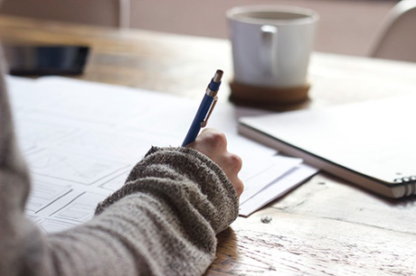

The tradition of Viennese coffee house culture goes back to the end of the 17th century. Here at Vienna, we take our
history, our coffee, and our community seriously.
“…a sort of democratic club, open to everyone for the price of a cheap cup of coffee, where every guest
can sit for hours with this little offering, to talk, write, play cards, receive post, and above all consume
an unlimited number of newspapers and journals.”
—Stefan Zweig
on the Viennese coffee house

Cafe
Bathed in warm light even on gray winter days, our airy space features high ceilings, reclaimed wood, exposed brick,
floor to ceiling windows, and an outdoor patio.
Cafe Vienna is a warm, inviting place where people come together to enjoy delicious beverages and snacks in an elegant
atmosphere. Whether you come seeking community, quiet reflection, or creative inspiration, we hope you'll plan to
stay a while.
Our Coffees
Simply put, we're proud of our beans. All our coffees are:
sustainably grown
hand selected
roasted on site
small-batch
responsibly sourced
yadda yadda you get the idea
Vienna Blend
A fusion of our favorite coffees from Latin America. Medium-bodied with light acidity,
Vienna Blend offers subtle notes of chocolate and berries.
Espresso Blend
A richly-flavored low-acid espresso, ideal for brewing at home.
Java Blend
A classic combo, seamlessly blending the richness of Java with the delicate floral notes of Ethiopian Mocha.
Sumatra
Full bodied, nutty and spicy with an underlying rich sweetness, Sumatra is a unique and compelling single-origin
coffee.
We have everything you need to brew the perfect cup of coffee at home.
Brewing
Making a great cup of coffee at home is simple. Choose your equipment, and follow the steps below.
Aeropress
Ideal for making a single cup of coffee.
Ideal for making a single cup of coffee.
Bring water to a boil and set it aside for 30 seconds.
Finely grind your coffee.
Briefly rinse a paper filter to ensure no papery taste.
Place the rinsed filter in the cap and twist into the chamber.
Add ⅛ cup of ground coffee to the chamber.
Set your timer for 2 minutes, and add ½ cup hot water.
Stir a few times.
Add another ¼ cup of water and give it a few more stirs.
Use the plunger to create a vacuum seal and let it brew for two minutes.
At the two minute mark, begin to press the coffee into your cup (this should take around 20 seconds).
Add ⅓ cup of water to the brewed concentrate.
Enjoy your coffee.
Chemex
Perfect for brewing up to eight 5-oz cups of coffee.
Bring water to a boil and set it aside for 30 seconds.
Wet the Chemex filter and place it in the Chemex vessel.
Place ¼ cup of fine, drip-grind coffee in the filter.
Pour 4 cups of water over grounds slowly in a circular motion over 3.5 minutes.
Draw down should finish at between 4 – 5 minutes.
Remove the filter and pour from the vessel into your cup.